1. 自己紹介
- さんのみや
- 広島県在住
- 道路設計CADの会社に勤務(20人規模)
- 道路排水設計にオープンCAEを使う活動
- OpenFOAMのinterFoam使ってます．
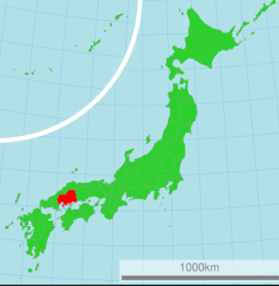
図1: 広島県
2. なぜ土木の業界でCAE
- 道路排水の問題を解決したい（建前）
- 社長や部長がやれと命じるから（本音）
- キャリアのため（論文とか，CAEソフトウェア開発とか）
- 第一人者になれそうな気がする（モチベーション）
3. 余談ですが・・・
- 計算力学技術者試験の熱流体1級に合格（ヤッタ！）
- 論文掲載されました（土木学会 応用力学論文集※１）
- 前職では自動車の排気系の設計CAEやってました（3次元・1次元の熱流体，排気音, STAR-CCM+, GT-Suite）
- 肩書：Webエンジニア（SE，PG），流体（開水路流れ）のイチ研究者
- 仕事1：WebGISの開発
- 仕事2：排水シミュレーションの研究開発
- ※１：三宮 広之, 内田 龍彦, 森 一起, 道路排水施設を想定した急勾配水路における水面形と圧力分布の数値解析のVerification &Validation, 土木学会論文集, 2026, 82 巻, 15 号
4. 目次
- 解きたい課題と方法
- 既往研究・斜め跳水の理論の調査
- OpenFOAMで斜め跳水を計算してみた
- 結論
5. 解きたい課題と方法
- 法面排水の合流部
- 豪雨に伴い，溢水が法面崩壊を招く
- OpenFOAMなどオープンCAEで豪雨時の溢水を予測したい，予測限界を知りたい．
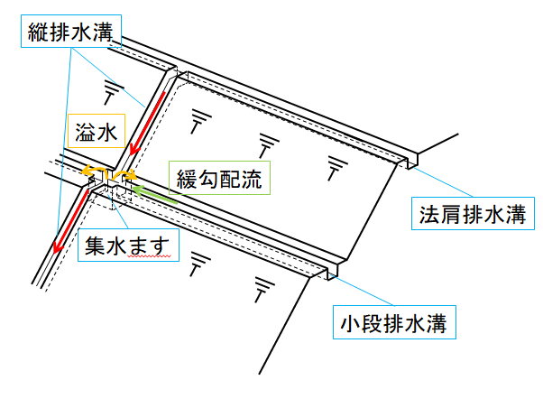
図2: 道路法面の模式図
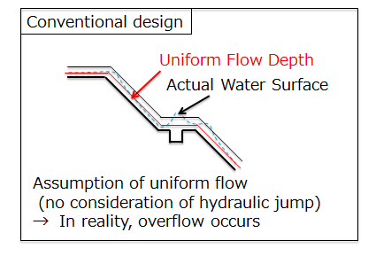
図3: 従来の設計方法（等流を前提）
6. 既往研究：法面排水の水理実験動画
- 法面排水構造物の合流箇所で起きる現象は斜め跳水（仮説）
- 複雑な流れ場を解く前に斜め跳水の理解を深める
- OpenFOAMで計算（流れの偏向による斜め跳水，合流は後日計算を行う）
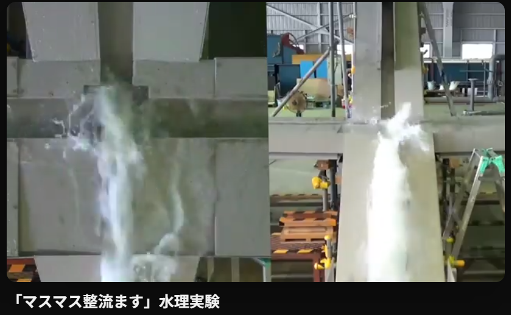
図4: インフラテック様が実施した水理実験画像※１
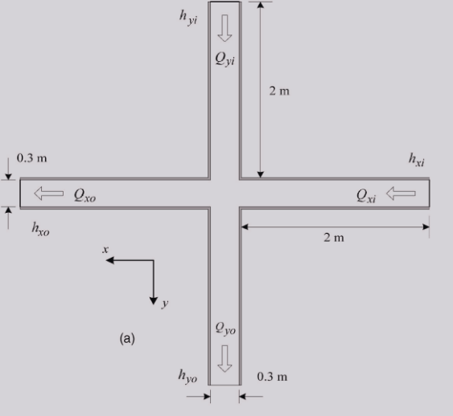
図5: Mignotが実施した実験概要（射流の合流）
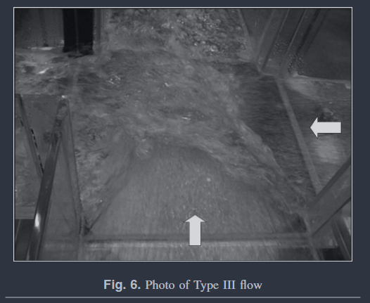
図6: 射流の合流箇所で発生した斜め跳水
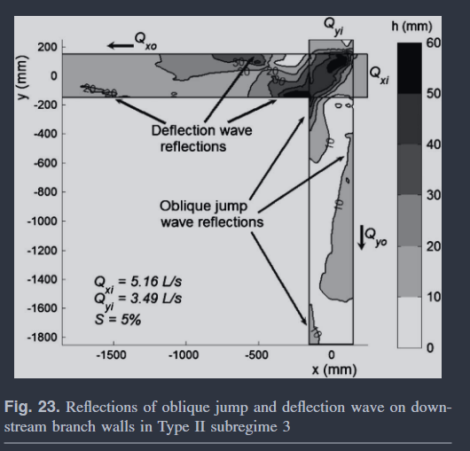
図7: 合流箇所から水路下流部かけて測定された水深分布（斜め跳水が反射）
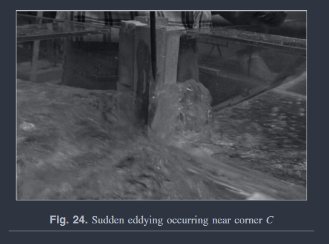
図8: Sudden Eddying
- ※1:インフラテック様のYoutube動画からスクショ画像取得
- https://www.youtube.com/watch?v=CkPWiZrFR9o
- https://www.infratec.co.jp/images/contents/pdt/2647/.pdf
- ※2:参考文献：Mignot, E. and Rivière, N. and Perkins, R. and Paquier, A.: Flow Patterns in a Four-Branch Junction with Supercritical Flow, Journal of Hydraulic Engineering, Vol. 134, pp. 701-713, 2008
7. 斜め跳水とは
- 合流や水路の偏向に伴い，流速ベクトルの大きさが減少→水面の上昇
- 波源は同心円状に広がり，円の接線状に不連続な波が重なった結果，一本の線に見える．
- 下記の数式はArthur T. Ippenの原著論文より拝借
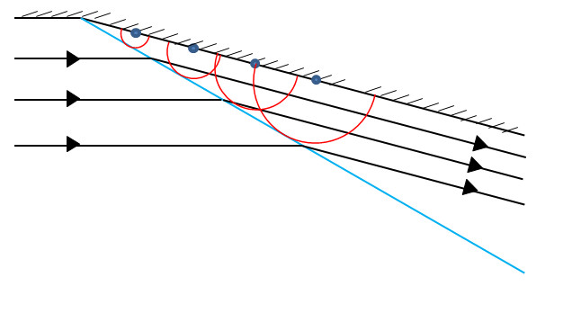
図9: 斜め跳水の発生メカニズム
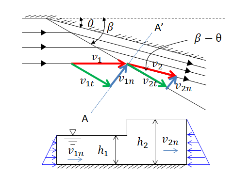
図10: 斜め跳水発生前後流速ベクトル
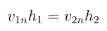
図11: 連続式(斜め跳水の法線方向)
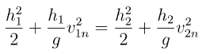
図12: 運動量保存則(斜め跳水の法線方向)
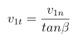
図13: v1nとv1tの関係
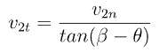
図14: v2nとv2tの関係
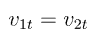
図15: 運動量の変化生じない接線方向の流速
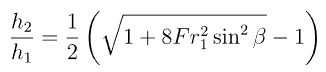
図16: h2/h1
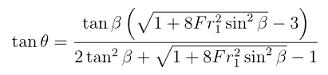
図17: tangent theta（この式からβを求めるのは困難）
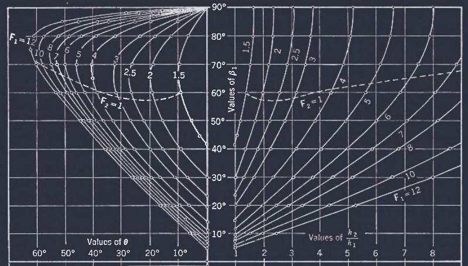
図18: Graphical aid（このグラフからβやh2/h1を求める．）
- 参考文献：Ippen, A.: High-Velocity Flow in Open Channels: A Symposium: Mechanics of Supercritical Flow, Transactions of the American Society of Civil Engineers, Vol. 116, pp. 268-295, 1951
8. OpenFOAMを用いた既往研究
- Fr数2，比較的小さいサイズの実験水路
- 側壁の波の水深分布を予測
- OpenFOAMのinterFoamにて，円形カーブで発生する斜め跳水の再現を行った．
- 誤差6%程度
- 参考文献：Kadia, S., Larsson, I.A.S., Billstein, M. et al.:Experimental and numerical investigations of the water surface profile and wave extrema of supercritical flows in a narrow channel bend. Sci Rep 14, 12247 (2024)
- https://www.nature.com/articles/s41598-024-61297-8#citeas
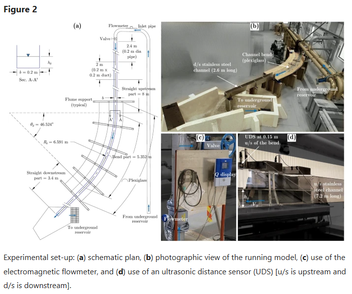
図19: 実験装置
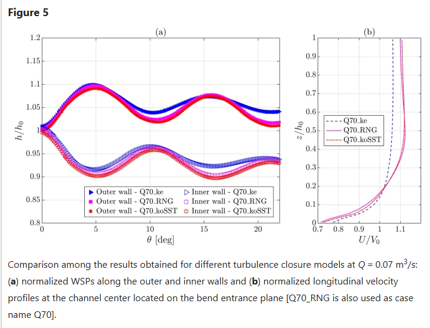
図20: 乱流モデルはk-epsilon RNGがよいとのこと
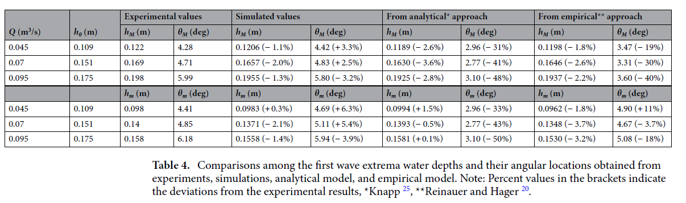
図21: 最大水深と波の位置が±6パーセント以内
9. OpenFOAMで斜め跳水の再現を行う設定
- 目標は，ippenの理論式の斜め跳水の角度とOpenFOAMの斜め跳水の角度を比較
- blockMeshにてメッシュ生成
- フルード数3.5，入口水深を固定（h0=0.02）
- 計算結果が早くほしいので，比較的小さな計算領域
- 実験値との比較は行わない，理論値とOpenFOAMを比較して理論を深く理解すること
- 水面にAMR（Adaptive Mesh Reifinement）適用(1/2刻み)
| 設定項目 | 内容 |
| ソルバー | interFoam |
| 格子幅[mm] | 10 |
| 時間刻み幅[s] | 自動調整（最大クーラン数：0.9） |
| シミュレーション時間[s] | 60 |
| 乱流モデル | 標準k-epsilon |
| 並列計算 | 24 |
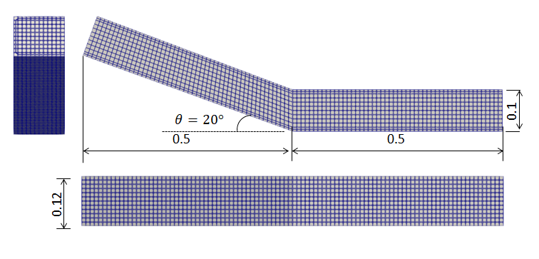
図22: 計算モデル寸法
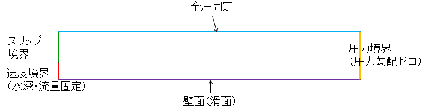
図23: 境界条件
10. OpenFOAMで斜め跳水の再現を行った結果
- 定性的に水路の偏向後に斜め跳水が発生することが確認できた．
- 斜め跳水の角度beta, Reference：53.25°，測定結果：30.40°
- 斜め跳水の水深h2, Reference：0.0560m ，測定結果：0.0564m
- 学んだこと，分析前は，流入口の条件で角度が決まると思っていたが，斜め跳水の発生前の値で角度を算出する必要がある
- h1=0.0272m
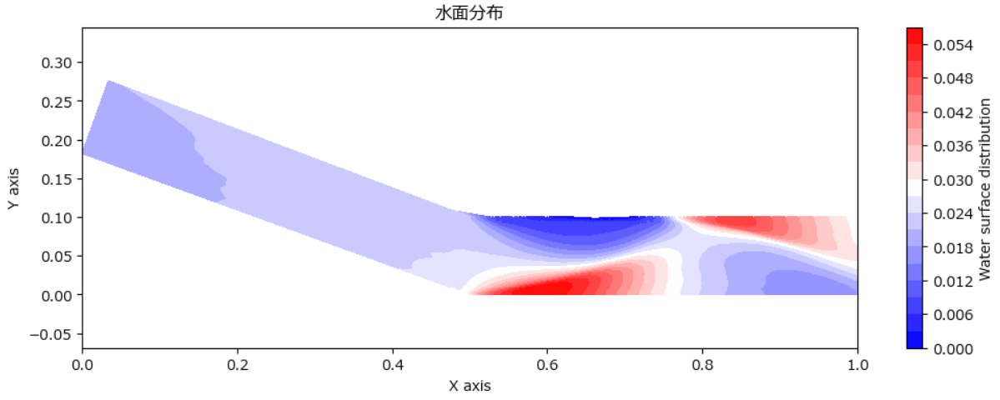
図24: 水面のコンター図
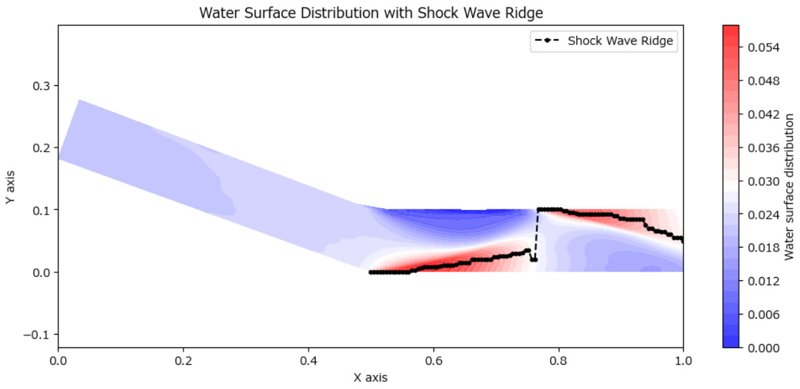
図25: 尾根線を描画，角度を算出(10.4度)
11. 結論
- 論文と教科書も読んで，実際にシミュレーション流して，理論と計算を比較
- 理論値は摩擦なし，乱流なしのポテンシャル流を想定
- 数値解析は摩擦有り，乱流モデルありのため単純な比較は難しい
- ひとまず，斜め跳水の再現と角度βの算出ができた．